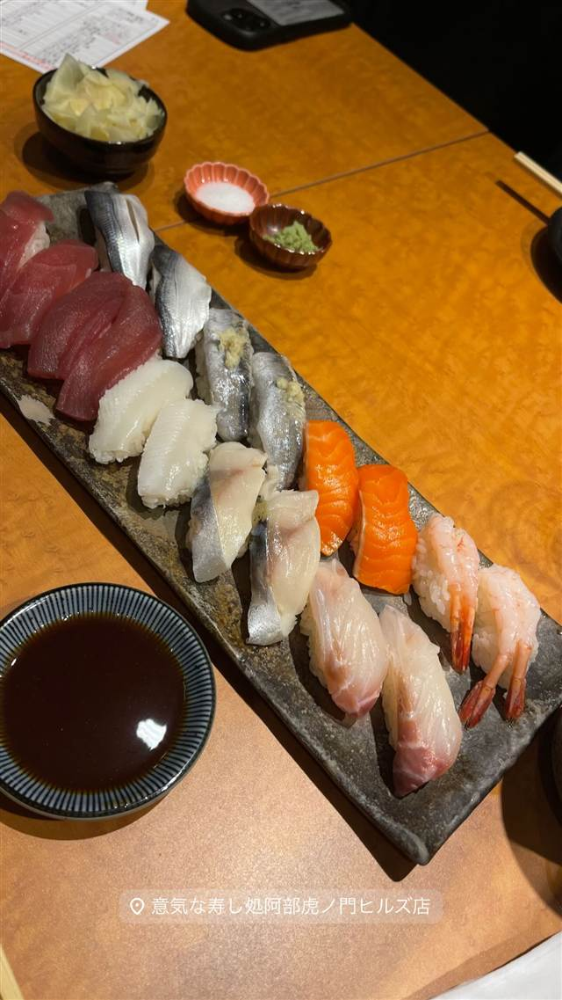

意気な寿し処阿部 虎ノ門ヒルズ店
シャリは店主の実家、魚沼産コシヒカリを使う江戸前寿司
意気な寿し処阿部虎ノ門ヒルズ店
新潟県南魚沼出身の阿部浩氏が12年の修行を経て2002年に広尾で創業した江戸前寿司店の一つ。実家から届く魚沼産コシヒカリや自家製野菜を使うのが特徴で、都内8店舗を展開する。虎ノ門ヒルズ店では食べ放題プランも用意する。
TRIVIA
豆知識
- シャリの米は店主の実家（新潟・南魚沼）で作られた魚沼産コシヒカリ
- 野菜や山菜も店主の母がつくる新潟産を使用
REVIEWS
世間の評判
3.48食べログ
ランチのコスパと新鮮なネタ
- ランチが1400円台で内容も充実していてコスパが良いという声が非常に多い
- 中トロやボタン海老などネタが新鮮で豊富だと高く評価する声が多い
- 食べ放題は通常コースよりネタや握りの質が落ちると感じる声がある
- 人気店で混雑時は行列ができ待ち時間がかなり長くなるという声が多い
食べログ 口コミ693件
| 創業 | 2002年、広尾に「意気な寿し処阿部」創業 |
|---|---|
| 系譜 | 店主が12年の修行を経て30歳で独立し広尾に開業。現在は都内に8店舗を展開し、虎ノ門ヒルズ店はその一つ |
| 看板 | 江戸前寿司（食べ放題コースあり） |
| こだわり | シャリの米は店主の実家（新潟県南魚沼市）で父が作る魚沼産コシヒカリを使用。野菜・山菜も店主の母がつくる新潟産を使用 |
| どこから | 都心 |
| 行くなら | 予約必須 行列 |
| 営業時間 | 月〜日 11:00-14:30、17:00-22:00 |
| 予算 | 昼 ¥1,000～¥1,999 夜 ¥6,000～¥7,999 |
| 定休日 | 無休（施設に準ずる） |
| 予約 | 予約可 |
| 場所 | 虎ノ門ヒルズ 東京都港区虎ノ門1-23-3 虎ノ門ヒルズ森タワー4F |
| メモ | 虎ノ門ヒルズ森タワー4F、食べ放題プランあり、予約制 |
食べたもの：寿司